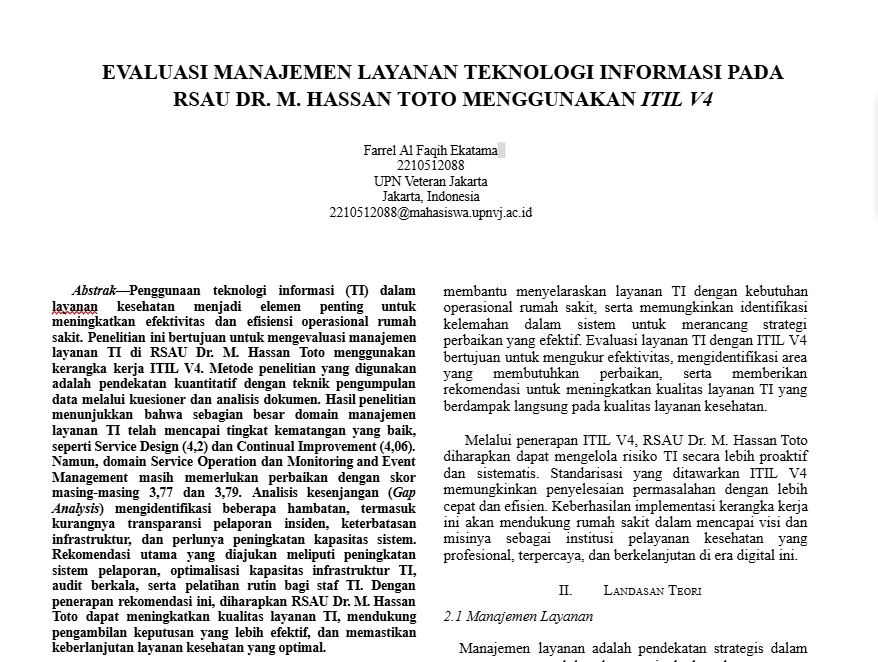
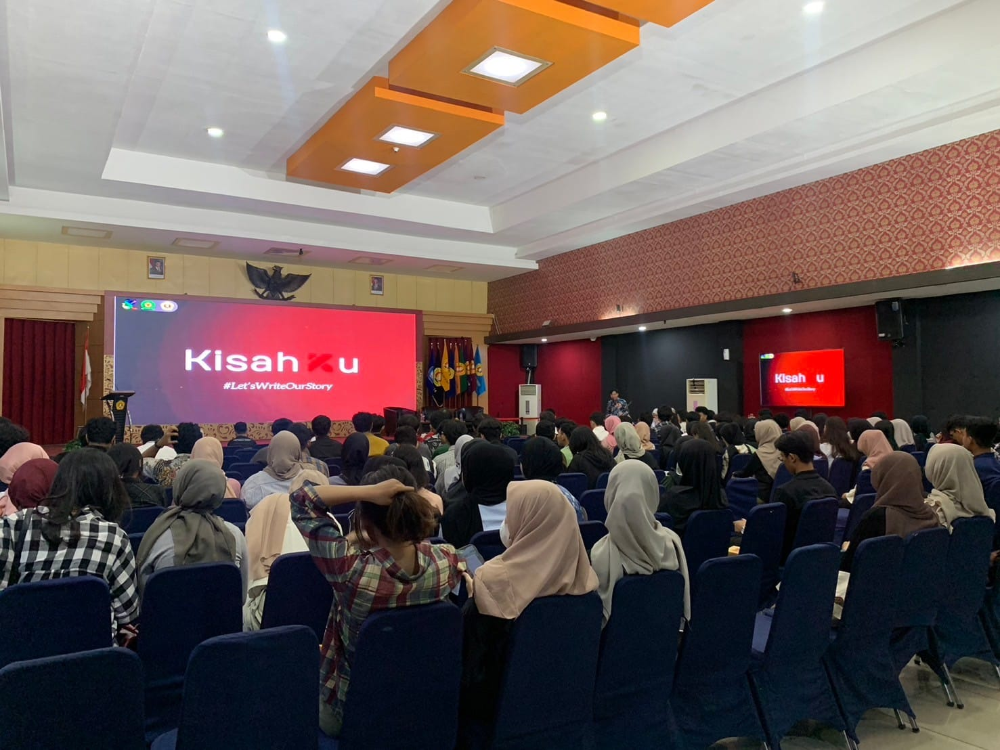

Selamat Datang di Perjalanan Saya
Farrel Al Faqih Ekatama
Seorang profesional di bidang IT Governance dan Analisis Data dengan semangat untuk mengubah data menjadi keputusan strategis.
Pendidikan

Sistem Informasi, UPN "Veteran" Jakarta
Agu 2022 - Sekarang | IPK: 3.92
Organisasi

Staf PSDM – KSM Cyber Security
Feb 2023 - Jan 2024
Proyek
IT Audit & Governance (COBIT, ITIL, ISO 27002)
Sep 2023 - Nov 2023

Organisasi
Staff Satuan Pengendali Pengembangn Internal, BEM UPN Jakarta
Jan 2024 - Jan 2025
Organisasi
Vice President KSM Cyber Security
Feb 2024 - Jan 2025
Event
Panitia KisahKu
18 Nov 2024

Event

Panitia World Privacy Day Conference 2025
25 Feb 2025
Organisasi

Presiden KSM Cyber Security
Feb 2025 - Sekarang
Magang

Internal Control – Bank Central Indonesia
Apr 2025 - Sekarang
Area Keahlian
Keterampilan yang terasah sepanjang perjalanan.
Data Analysis & Business Intelligence
Machine Learning & NLP
Data Processing & ETL
Customer Segmentation
IT Governance & Data Privacy
Cyber Security
ITIL & COBIT Frameworks
Hubungi Saya
Terima kasih telah mengikuti perjalanan saya. Jika Anda tertarik untuk berdiskusi, berkolaborasi, atau memiliki peluang, saya akan sangat senang mendengarnya.
085159031500